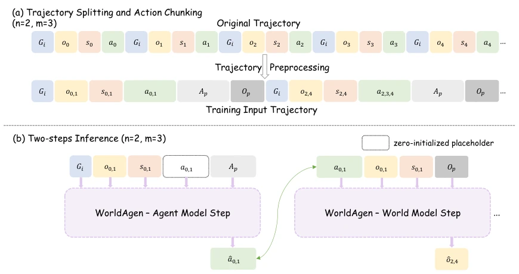
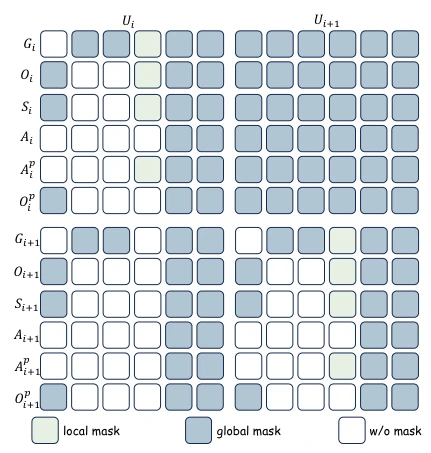
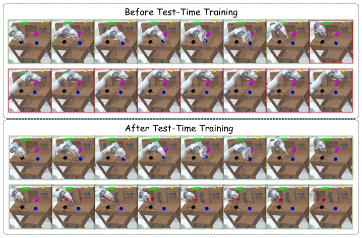
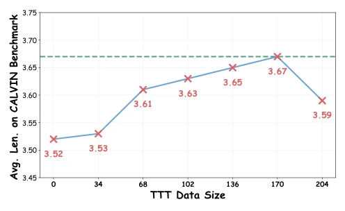

现有的 VLA 模型（如 RT-1, RT-2）大多依赖静态数据集预训练，一旦部署到未见过的环境（新物体布局、光照变化），性能就崩盘（Kim, Finn, and Liang 2025; Li et al. 2025）。虽然有些工作结合了世界模型（World Models），但它们通常与动作预测解耦，无法在部署时主动适应环境动态（Sakagami et al. 2023）。机器人领域面临的核心痛点是：预训练模型无法捕捉现实世界的分布偏移（Distribution Shifts）。本文旨在解决 VLA 模型在测试时缺乏主动适应机制的问题，试图通过在线微调世界模型来提升泛化能力，填补离线训练与真实世界泛化之间的鸿沟。
Figure 1: Overview of WorldAgen. (a) WorldAgen Architecture. WorldAgen unifies an agent policy head for task-conditioned action prediction and a world modeling head for task-agnostic state prediction within a single Transformer backbone. At tra- jectory unit i, the agent receives the task instruction Gi, the observation chunk Oi, and the robot state chunk Si, the action placeholder Ap and observation placeholder Op. Then it predicts the action chunk ˆAi. After that, the world model predicts the future observation chunk ˆOi to refine the shared representation of environment dynamics. (b) Two-stage TTT pipeline. Stage 1 performs random exploration in the new environment to collect unlabeled trajectories. Stage 2 adapts the world model using LoRA-based fine-tuning on the observation loss Lo,

Figure 2: Trajectory Splitting, Chunking, and Two-Step Inference. Example with observation chunk length n = 2 and action chunk length m = 3. (a) Trajectory Splitting and Chunking: a raw trajectory is divided into trajectory units Ui, where each unit contains an observation chunk Oi and a robot state chunk Si obtained via uniform subsampling from m consecutive observations and states, and an action chunk Ai obtained by grouping m actions. (b) Two-Step Inference: the agent model first initializes a zero action placeholder Ap and then replaces it with the predicted action chunk ˆAi. The world model subsequently predicts the next observation chunk ˆOi, conditioned on the updated trajectory unit.

Figure 3: Proposed Mixed Unidirectional Attention Mask: combines local and global masking. For each trajectory unit, WorldAgen applies a local mask that prevents the action chunk Ap from attending to the corresponding action place- holder Ai. A global mask is further used to construct a task- agnostic world model head, so that the observation place- holder Op will not attend to the task instruction Gi. General structure conforms to strictly causal prediction.
Figure 4: This figure shows the performance of the WorldA- gen model on CALVIN as the number of chunks changes.

Figure 5: In the comparison between the trajectories before and after TTT, the red regions indicate failures within the trajectory, while the green regions represent successful portions.

Figure 6: This figure shows that as the amount of data in- creases, the TTT effect gradually increases.